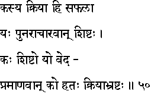
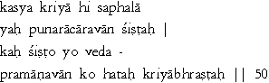

|

|
Verse 50 - Meaning:
Q:Whose (kasya) sacred ritual (kriya) will be fruitful ? (hi-saphalaa)
A:Of that one (yah) who follows the rules of ritualistic purity (punar-aacaaravaan) and who is a virtuous person. (sistah)
Q:Who (kah) is a Sistah ?
A:He who structures his life strictly in accordance with the Vedic injunctions. (yo veda-pramaanavaan)
Q:Who (ko) should be considered dead even while living ? (hatah)
A:One who has abandoned (bhrashtah) the duties (kriya) ordained by the Vedas.
|